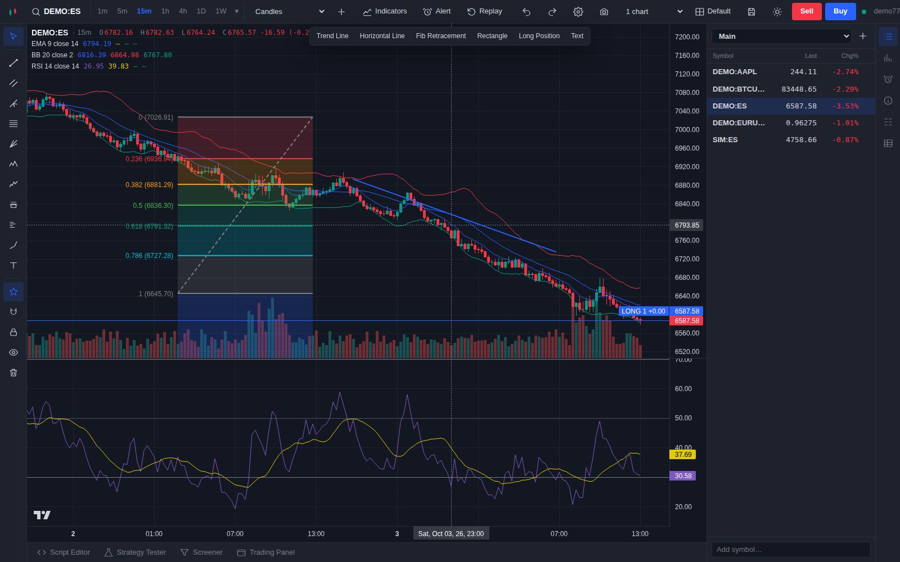
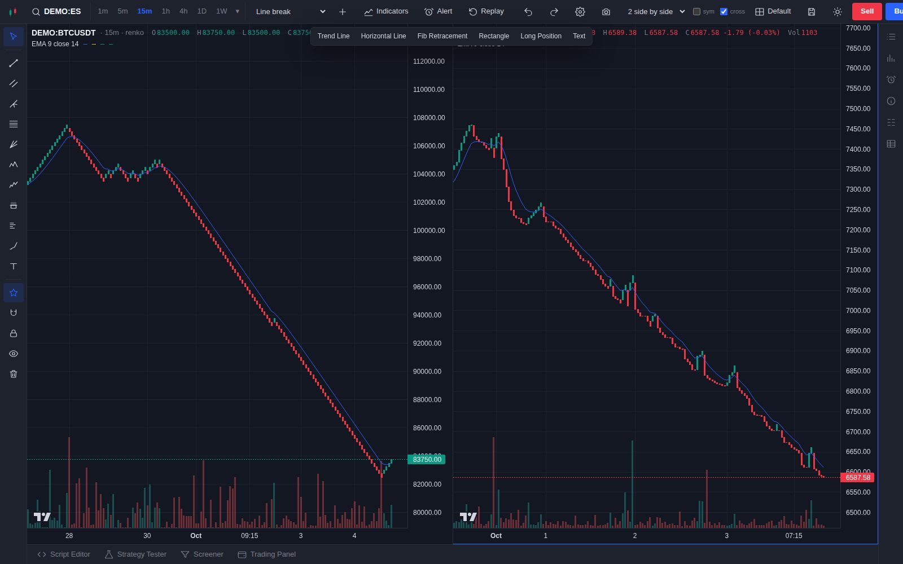
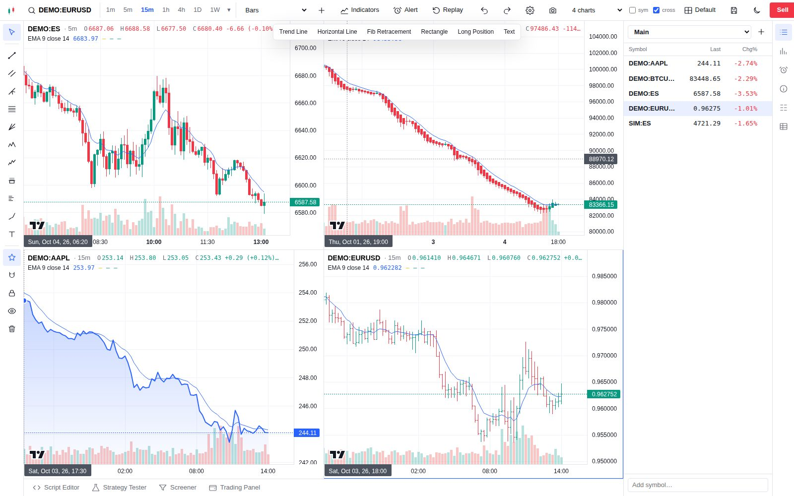
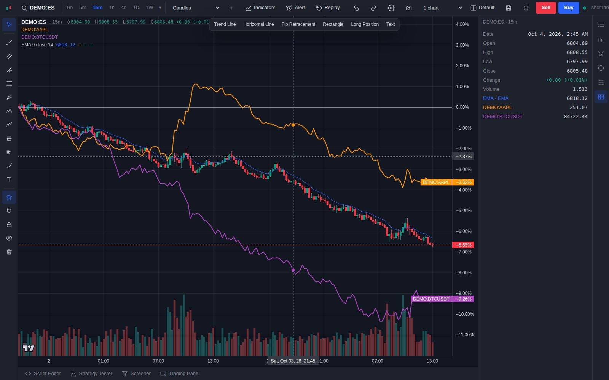
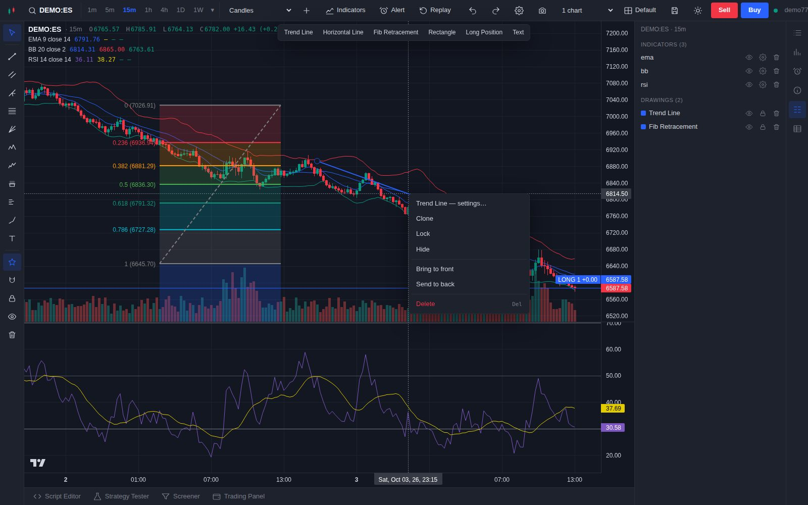
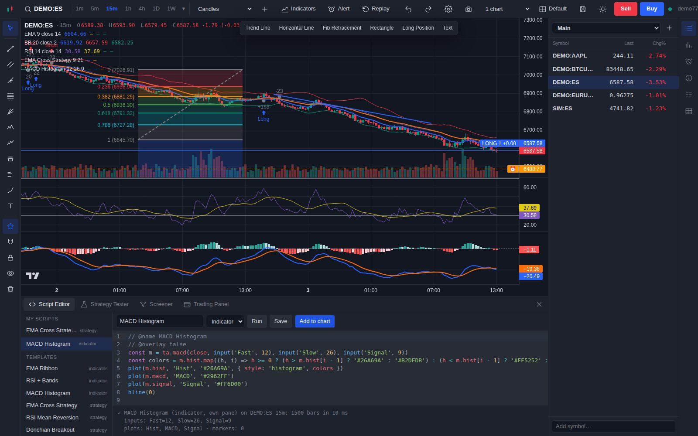
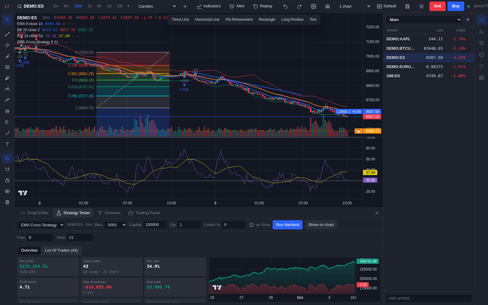
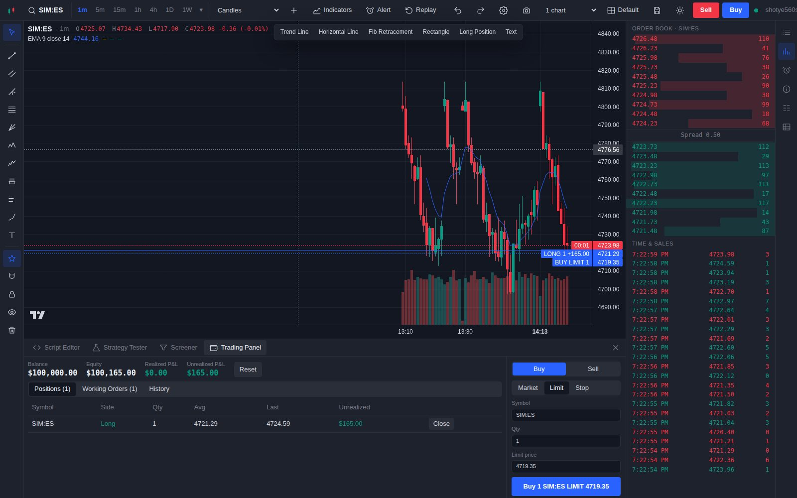

Pro-grade charting, drawing, scripting, backtesting and trading — without a subscription. Plug in NinjaTrader 8 for CME futures, stocks and FX from Yahoo, crypto from Binance, and keep every bar on your own disk.

Everything a pro chart does
The features you'd normally pay a monthly plan for — on your own hardware, with no limits on charts, indicators or alerts.
Every time-based style plus the price-based charts serious traders use to cut through noise. Indicators recalculate on the bricks, just like on a pro platform.

Watch futures, crypto, stocks and FX side by side. Link the symbol or the crosshair across charts and save each layout to come back to.

Overlay any symbol as percent change, or chart a spread or ratio like ES - NQ or 2 * GC / SI straight from symbol search.

Trend lines, channels, pitchforks, Fibonacci and Gann, harmonic and Elliott patterns, long/short positions, volume profiles, anchored VWAP, shapes and notes — saved per symbol, everywhere you log in.

Start from 876 built-in indicators, then build your own with OpenScript — a Pine-style API with ta.*, plot and input, running sandboxed in your browser.

Turn an idea into a strategy with strategy.entry and strategy.close, then see exactly how it would have traded — entries and exits marked on the chart.

Paper trade on the live feed with market, limit and stop orders — positions and working orders drawn right on the chart. When you're ready, route orders to your NinjaTrader 8 account.

Everything included
Every feature is available to every user on your server.
Keyboard first
The shortcuts you already know.
Get started
No NinjaTrader needed to try it — a built-in simulator streams live ticks, and a seeding script adds a month of demo history.
$ git clone https://github.com/Aminou973/TV-terminal $ cd TV-terminal $ cp server/.env.example server/.env $ docker compose up --build # open http://localhost:8000 → Register
$ cd server && pip install -e ".[dev]" $ python scripts/seed_demo.py $ uvicorn app.main:app --port 8000 $ cd ../web && npm install && npm run dev # open http://localhost:5173 → Register
Roadmap
The core terminal is done. These upgrade packs are rolling out next.
Price-based charts, any interval, compare & spreads, chart settings, drawing menus, style editor, object tree, undo, templates.
Alerts on indicators, trend lines and script signals; webhook, Telegram and email delivery; trigger frequency and expiry.
DOM ladder, bracket orders with SL/TP, drag orders on the chart, trade journal.
News, economic calendar, earnings, fundamentals, heatmap and market overview.
Clone it, run one command, and start charting. Free forever, MIT licensed.